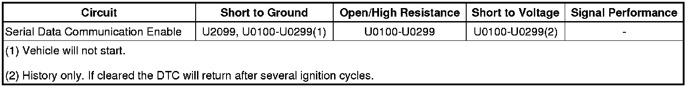

U2099
DTC U2099
Diagnostic Instructions
* Perform the Diagnostic System Check - Vehicle (Initial Inspection and Diagnostic Overview) prior to using this diagnostic procedure.
* Review Strategy Based Diagnosis (Initial Inspection and Diagnostic Overview) for an overview of the diagnostic approach.
* Diagnostic Procedure Instructions (Initial Inspection and Diagnostic Overview) provides an overview of each diagnostic category.
DTC Descriptor
DTC U2099 00
- High Speed Communication Enable Circuit
Diagnostic Fault Information

Circuit/System Description
The body control module (BCM) activates the serial data communication enable circuit, when the ignition key is in ACC, ON or START. The serial data communication enable circuit wakes up the electronic brake control module (EBCM) for buss communication.
Conditions for Running the DTC
* The system voltage is between 9-16 volts.
* The vehicle power mode master requires serial data communication to occur.
Conditions for Setting the DTC
The BCM senses a short to ground on the serial data communication enable circuit.
Action Taken When the DTC Sets
* The output command is turned off while the malfunction is present.
* The modules use a default value for the missing parameters until the next ignition cycle.
* The module(s) is never signaled, therefore the specific subsystem(s) will not function.
* The vehicle will not start while the circuit is shorted to ground.
Conditions for Clearing the DTC
* A current DTC clears when the malfunction is no longer present.
* A history DTC clears when the module ignition cycle counter reaches the reset threshold of 50, without a repeat of the malfunction.
Diagnostic Aids
* Use the DMM MIN/MAX function to capture/locate intermittent conditions.
* Short to ground will also set multiple history no communication codes for GMLAN high speed modules.
Reference Information
Schematic Reference
Data Communication Schematics (Electrical Diagrams)
Connector End View Reference
Component Connector End Views (Connector Views)
Description and Operation
Data Link Communications Description and Operation (Description and Operation)
Electrical Information Reference
* Circuit Testing (Component Tests and General Diagnostics)
* Connector Repairs (Component Tests and General Diagnostics)
* Testing for Intermittent Conditions and Poor Connections (Component Tests and General Diagnostics)
* Wiring Repairs (Component Tests and General Diagnostics)
Scan Tool Reference
Control Module References (Programming and Relearning)for scan tool information.
Circuit/System Testing
1. Ignition OFF, disconnect the harness connector at the EBCM.
2. Retest for current DTCs. DTC U2099 should remain current.
• If the DTC becomes history, replace the EBCM.
3. Ignition OFF, disconnect the harness connector at the BCM.
4. Test for infinite resistance between the serial data communication enable circuit and ground.
• If less than infinite resistance, repair the enable circuit for a short to ground.
5. If all tests normal, replace the BCM.
Repair Instructions
Perform the Diagnostic Repair Verification (Verification Tests) after completing the diagnostic procedure.
Control Module References (Programming and Relearning)for module replacement, setup, and programming